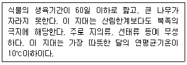
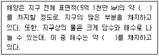
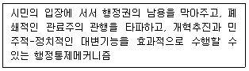
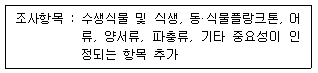
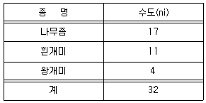
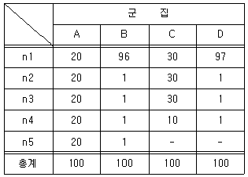

자연생태복원산업기사 (2010-05-09 기출문제)
1과목: 환경생태학개론
1. 섬모충류의 짚신벌레의 세포안에 단세포의 조류가 들어있는 것 같이 서로 다른 생물들끼리 서로 이익을 주고 받는 관계를 무엇이라 하는가?
- 외부공생
- 청결공생
- 편리공생
- 상리공생
(정답률: 알수없음)

2. 호수의 부영양화 현상이 진행될 때의 특징으로 옳은 것은?
- 수질이 개선되는 효과가 있다.
- 병원균의 수가 증가하고 호기성으로 변한다.
- 식물플랑크톤이 대량 발생되어 수질이 악화되기 쉽다.
- 영양영으로 인하여 어류가 증삭하기 좋은 환경이 된다.
(정답률: 알수없음)
3. 생태천이상 성숙단계에서 나타나는 군집에너지 특성이 아닌 것은?
- 총생산량/군집호흡량>
- 총생산량/현존생체량이 낮다.
- 순군집생산량이 낮다.
- 유지생체량/단위에너지흐름이 낮다.
(정답률: 알수없음)
4. 환경요인 중 영양물질의 양이 생물체의 생장을 제한한다고 주장한 학자는?
- 아인슈타인
- 가우스
- 리비히
- 파스퇴르
(정답률: 알수없음)
5. 하천에 어느 정도의 유기물이 유입되더라도 물리·화학·생물학적 작용에 의하여 어느 정도 깨끗해지는 작용은?
- 자정작용
- 이온화작용
- 삼투작용
- 평형작용
(정답률: 알수없음)
6. 연안생태계 보전 및 복원방침으로 가장 거리가 먼 것은?
- 회피·저강의 경우 타당성 및 대상(代償)조치를 검토하고 그것에 대한 효과 및 영향 조사
- 다양하고 유일한 생태계 기능을 가진 곳은 기능 전체를 복원
- 대상 조치의 실행에 의한 생태계에 악영향이 없음
- 인공간석지를 조성하는 경우 사후 관리체계를 수립
(정답률: 알수없음)
7. 오존층을 잘못 설명한 것은?
- 오존의 생성은 태양의 복사량에 좌우되기 때문에 계절에 따라 차이가 있다.
- 오존층은 태양으로부터 방출되는 자외선을 흡수하여 지구로 도달하는 자외선을 막아 주는 역할을 한다.
- 오존층을 파괴하는 주 물질은 이산화탄소이다.
- 오존(O3)은 산소분자(O2)와 산소원자(O)가 결합되어 생성된 물질이다.
(정답률: 알수없음)
8. 다음 생태계 내 종 및 개체군 사이의 상호작용이 옳게 연결된 것은?
- 중립 - 상호관계는 서로에게 해를 끼침
- 상리공생 - 상호관계는 서로에게 유익함
- 기생 - 어느 한 쪽에게는 유익하며 다른 한쪽에게는 영향이 없음
- 경쟁 - 각각의 종과 종 사이에 직접적 또는 간접적으로 영향이 없음
(정답률: 알수없음)
9. 일정한 지역의 군집 내에서 중요한 역할을 수행하고, 다른 종에 영향을 크게 미치는 종을 무엇이라 하는가?
- 저위유사종
- 희귀종
- 우점종
- 천연기념물
(정답률: 알수없음)
10. 팜파스(pampas)와 벨트(veldt), 사바나(savanna)가 해당하는 생물군계는?
- 툰드라
- 초원
- 열대우림
- 사막
(정답률: 알수없음)
11. 적조현상의 설명 중 옳지 않은 것은?
- 플랑크톤의 이상 대증식 결과이다.
- 담수의 경우 취수과정에서 살조제인 황산동(CuSO4)을 투여한다.
- 연안해역에 대한 영양염류의 농도, 해수의 온도, 해류의 흐름 등에 대한 환경 monitoring system 의 구축이 필요하다.
- 해수 색을 적색으로 변화시킬 때에 국한되는 용어이다.
(정답률: 알수없음)
12. 다음 중 육수생태계를 조사하기 위한 항목이 아닌 것은?
- 수생식물 및 식생
- 어류
- 조류
- 염생식물
(정답률: 알수없음)
13. 습지의 생태복원계획을 수립하기 위해 서식처 원형(prototype)을 조사하려고 한다. 생태계 구조의 조사에 해당하지 않는 것은?
- 호안의 경사
- 생체량
- 수심 조건
- 유속
(정답률: 알수없음)
14. 다음 중 지구온실효과에 영햐을 주는 요인이 가장 적은 것은?
- 산소
- 이산화탄소
- 메탄
- 염화불화탄소
(정답률: 알수없음)
15. 부들, 달뿌리풀, 택사, 보풀, 줄 등의 식물들을 도입하기에 가장 적합한 환경은?
- 고산지대
- 인공지반
- 수변지역
- 중위도의 산림
(정답률: 알수없음)
16. 다음 설명에 해당하는 곳은?

- 사막
- 툰드라
- 타이가
- 열대우림
(정답률: 90%)
17. 침엽수림대에서 발달하는 토양은?
- 갈색토
- 적색토
- 흑색초원토
- 포드졸토
(정답률: 알수없음)
18. 다음 중 ( )안에 들어갈 수치를 순서대로 나열한 것은?

- 50%, 50%
- 60%, 79%
- 60%, 86%
- 71%, 99%
(정답률: 알수없음)
19. 수중에서 1차 생산력을 측정하는 적합한 방법은?
- 수확법
- 이산화탄소법
- 산소측정법
- 엽록소법
(정답률: 알수없음)
20. 다음 중 경재배타의 원리에 대한 설명으로 틀린 것은?
- 두 종이 똑같은 생태적 지위를 점유할 수 없다는 생태적 지위의 개념이 들어 있다.
- Gause의 법칙으로도 불린다.
- 한 자원에 대한 심한 경쟁에서 한 종은 멸종하고 다른 종은 살아남는다.
- 자원경쟁의 결과 항상 두 종은 공존하게 된다.
(정답률: 알수없음)
2과목: 환경학개론
21. 환경경제이론에 있어서 환경가치추정방법이 아닌 것은?
- 지불용의액에 의한 추정
- 여행비용에 의한 추정
- 환경가치에 의한 추정
- 속성가격에 의한 추정
(정답률: 알수없음)
22. 생태계의 원리에 대한 설명으로 옳은 것은?
- 물질은 생태계 내에서 순환한다.
- 에너지 흐름은 양방향으로 흐른다.
- 생태계의 구조는 환경이 변해도 일정하다.
- 생물종이 다양할수록 생태계는 불안정하다.
(정답률: 알수없음)
23. 도시지역의 환경지표로서 도시자연식생의 교란정도를 파악하기 위해 귀화율이 활용되고 있다. 어떤 도시지역의 관속 식물종수가 250종이고 귀화식물 출현종수가 42종이라 할때의 귀화율은?
- 약 6%
- 약 12%
- 약 17%
- 약 25%
(정답률: 알수없음)
24. 우리나라 환경정책의 발달 과정 중 국토환경용량 관리에 대한 내용을 적극적으로 다루게 된 시기는?
- 제 1기(∼1997년까지)
- 제 2기(1977∼1989년)
- 제 3기(1990∼1999년)
- 제 4기(2000년 이후)
(정답률: 알수없음)
25. 다음 설명에 해당되는 것은?

- NGO
- Ombudsman
- EIA
- Partnership
(정답률: 알수없음)
26. 생태계보전지역(생태계가 특히 우수하거나 경관이 특히 수려한 지역)이 지정되는 곳의 생태·자연도의 등급은?
- 3등금
- 2등급
- 1등급
- 5등급
(정답률: 알수없음)
27. 다음 중 환경분야에서 새롭게 대두된 생태도시와 유사한 개념으로서 거리가 먼 것은?
- 환경도시
- 지속 가능한 도시
- 행태도시
- 녹색도시
(정답률: 알수없음)
28. 공단지역과 기타 오염된 자연환경 개선을 목적으로 조성하는 다층구조의 숲으로서 환경과 서식처를 보전할 수 있는 형태의 숲은?
- 환경보전림
- 보안림
- 경관녹지
- 이치림
(정답률: 알수없음)
29. 환경영향평가 중 환경의 현황조사에 포함되는 평가항목이 아닌 것은?
- 생활환경
- 사회·경제환경
- 심리적 환경
- 자연환경
(정답률: 알수없음)
30. 다음 중 환경정책에 관한 설명으로 옳지 않은 것은?
- 환경정책이란 일반적으로 환경문제 해결을 위한 정부의 공공정책을 말한다.
- 환경오염의 제거 및 감소, 오염으로 인한 피해 감소 등의 세부 활동을 포함한다.
- 환경정책은 앞으로 예상되는 문제를 다루며, 과거의 환경문제는 관심이 없다.
- 환경정책은 지배원리, 시간, 조망 등 다른 공공정책과 차이를 보인다.
(정답률: 알수없음)
31. 우리나라에서 생태 네트워크를 구분하는 기준이 아닌 것은?
- 백두대간은 생태복원지역이다.
- 비무장지대는 핵심생태지역이다.
- 생태통로지역은 핵심생태지역과 인접지역의 생태계의 연결통로이다.
- 생태복원지역은 난개발로 훼손된 지역을 포함한다.
(정답률: 알수없음)
32. 다이아몬드(Jared Diamond)의 이론에 따른 효율적 녹지배치로 적절치 않은 것은?
- 작은 녹지 여러 개를 만들기보다는 합쳐서 큰 녹지를 만든다.
- 작은 녹지 여러 개를 한 곳에 집중시켜 배치시키기 보다는 여러 곳으로 분산시킨다.
- 띠 모양의 녹지보다는 원모양의 녹지를 만든다.
- 분산된 녹지는 생물이동통로를 만든다.
(정답률: 알수없음)
33. 환경용량이 고려되어야 하는 이유는?
- 이웃과의 친목도로를 위해
- 사회정의 실현을 위해
- 환경의 변화 상태를 알기 위해
- 경제활동에 의한 환경부하가 적은 사회를 실현하기 위해
(정답률: 알수없음)
34. 다음 중 지속가능한 발전(Sustainable development)의 이론이 제기된 배경과 거리가 먼 것은?
- 대중적인 빈곤
- 지속적인 인구감소
- 지구온난화와 기후변화
- 환경질의 파괴
(정답률: 알수없음)
35. 기상학과 대기오염에 관한 내용 중 틀린 것은?
- 정상적인 조건하에서 배출된 오염물은 주변 공기보다 온도가 높다.
- 오염물의 농도는 기온이 역전 상태일 때 감소한다.
- 기온 역전은 맑은 날 바람이 약한 아침에 일어난다.
- 폭풍 발생시는 공기가 빠른 속도로 이동하기 때문에 오염물을 희석시킬 수 있다.
(정답률: 알수없음)
36. 현재 서울의 남산은 도로와 주거지 등에 의하여 고립된 섬과 같다. 즉, 서울의 남산은 녹지이지만 생물의 서식공간 및 이동로로서 기능은 충분히 발휘되지 않고 있다. 이렇게 패치화 된 공간을 연결해 주는 개념을 무엇이라 하는가?
- Allee의 효과
- 녹지 네트워크
- 항상성 작용
- 순화 작용
(정답률: 알수없음)
37. 기조성된 도시에서 자연보호와 종보호를 위한 지침으로 올바른 것은?
- 도시전체의 자연개발은 도시의 발전방향과는 무관하게 계획되어야 한다.
- 도시개발에서 기존의 오픈스페이스와 생태계는 상황에 따라 보호되어야 한다.
- 도시전체에서 비오톱 연결망을 구축하고 그 안에서 기존 오픈스페이스가 연결되도록 한다.
- 지역의 특징적인 경관은 무시될 수 있다.
(정답률: 알수없음)
38. 다음 중 경쟁적배제(competitive exclusion)에 관한 설명 중 옳은 것은?
- 두 생물 종은 동일 군집 안에서 동일한 지위를 가질 수 있다.
- 경쟁적배제는 종간경쟁(interspecific competition)의 결과이다.
- 두 생물종이 동일한 서식지를 공유하기 위해서는 공통된 생태적 지위 범위를 넓혀야 한다.
- 생물 종은 동일한 자원을 두고 다른 종이 멸종할 때 까지 경쟁한다.
(정답률: 알수없음)
39. 환경정책기본법상에서 환경보전 목표의 설정과 이의 달성을 위한 국가환경종합계획에 포함되지 않는 내용은?
- 생물다양성·생태계·경관 등 자연환경의 보전에 관한 사항
- 방사능오염물질의 관리에 관한 사항
- 지역 주민참여에 관한 사항
- 국토환경의 보전에 관한 사항
(정답률: 알수없음)
40. 생태네트워크의 기능과 필요성을 설명한 것으로 적절치 않은 것은?
- 생물다양성 보전 및 증진을 위한 종합적인 접근이다.
- 난개발로 훼손된 환경을 개선하기 위한 대안개념이다.
- 도시에 산재한 생태적 공간을 유기적으로 연결하는 것이 초점이다.
- 생태네트워크를 통한 도시생태계 복원을 위해 풍부한 비용투자가 이뤄져야 한다.
(정답률: 알수없음)
3과목: 생태복원공학
41. 다음 시설물 중 자연형 하천 시공초기에 호안을 보호하는데 가장 좋은 것은?
- 식생매트
- 거석
- 수제
- 통나무방틀
(정답률: 알수없음)
42. 다음 산비탈사방녹화공사의 공종 중 기초사방공사의 공법에 해당하지 않는 것은?
- 누구막이
- 바자얽기
- 비탈흙막이
- 단끊기
(정답률: 알수없음)
43. 토양의 개량에 사용되는 토양개량제 중 토양을 부드럽고 탄력성이 있게 하며, 토양의 고결을 막기 위해 사용되고 점토질에는 통기성을 오히려 악화시키는 것은?
- 발포스티렌
- 피트모스
- 메쉬 엘리먼트(mesh element)
- 다공질 토양개량자재
(정답률: 알수없음)
44. 호수나 하천에 의해 발생하는 습지로 다양한 식생을 가지고 있는 습지는?
- 산성습원
- 알칼리성습원
- 늪
- 수변습지
(정답률: 알수없음)
45. 유량이 많을 때 유속이 빠른 집중류에 의해 발생하는 하상세굴로 형성되고, 수로의 사행 흐름축으로부터 약간 하류에 출현하는 것은?
- 여울
- 사주
- 못
- 보
(정답률: 알수없음)
46. 다음 중 비탈면에 생육하는 녹화용 초본식생이 비탈면 표면의 토양 침식 방지에 미치는 효과에 대한 설명으로 옳은 것은?
- 초본류의 근계는 분포 밀도가 높아 빗물의 표층토 침투 능력을 개선시키고, 빗물의 흐름을 억제한다.
- 고밀도의 초본류는 지표면에서 빗물의 유속은 억제하지만, 흐름에는 영향을 못 미친다.
- 초본류의 잎이나 줄기는 빗물의 충격력을 감소시키지 못하므로, 침식방지에는 적합하지 못하다.
- 초본류의 뿌리가 토양층에 고밀도보다 저밀도로 분포할 때 침식방지효과가 더 크다.
(정답률: 알수없음)
47. 사막의 녹화기술에 있어서 비사고정을 위한 녹화기술로 적합하지 못한 것은?
- 정사공법
- 피복공법
- 퇴사물세우기공법
- 줄돌쌓기공법
(정답률: 알수없음)
48. 다음 중 비탈면 녹화공법의 목적과 가장 거리가 먼 것은?
- 붕괴 우려지의 보강
- 자연생태계의 회복과 보전
- 황폐한 녹색환경의 회복과 보전
- 식생경관의 조성과 보전
(정답률: 알수없음)
49. 다음의 지질관련 용어에 대한 설명 중 틀린 것은?
- 파쇄대(破碎帶) : 양반이 단층운동 등에서 파괴되어 세편화된 부분이 연결된 것이다.
- 변질(變質) : 지각운도 시에 강대한 수평응력이 작용해서 일어나는 암석의 변형과 지층의 교란현상이다.
- 풍화(風化) : 풍화의 종류에는 물리적 풍화와 화학적 풍화가 있는데, 물리적 풍화는 주로 온도에 의해 발생한다.
- 틈(節理) : 양반에서는 압축이나 인장응력에 의해 발생된다.
(정답률: 알수없음)
50. 다음 비탈면 녹화에 대한 설명 중 부적합한 것은?
- 식생기반재 뿜어붙이기에서는 초본과 목본을 적당하게 혼합하되 외래도입초종의 발생기대본수는 1000본/m2 이내로 제한한다.
- 비탈면의 기울기가 가파르면 파종량에 할증을 하여 주고, 북향인 곳은 남서향보다 10%이상 할증해준다.
- 초본류 위주의 배합에서는 1000∼2000본/m2 정도를 표준 파종량으로 한다.
- 외래도입초종이 너무 밀생하면 혼파한 자생종이 피압되므로 외래도입초종의 파종밀도는 가급적 낮추는 것이 좋다.
(정답률: 알수없음)
51. 다음 중 생물상 복원 가능성의 평가 기준은?
- 에코톱
- 서식지의 감소
- 종 다양성
- 환경 포텐셜
(정답률: 알수없음)
52. 다음 습지식물 중에서 정수식물에 해당하는 것은?
- 애기부들
- 마름
- 수련
- 물수세미
(정답률: 알수없음)
53. 조수의 영향을 받지 않는 지역에서 습지 인식을 위한 수문학적 지역의 분류를 할 때 각 범위와 지속정도에 대한 설명 중 잘못된 것은?
- 지속적으로 침수되어 있는 지역의 침수 지속정도는 100%임. (단, 침수가 평균수심 2m 초과)
- 반지속적 혹은 지속적으로 침수되어 있는 지역의 침수지속정도는 50∼75% 사이임.(단, 침수평균 수심이 2m이하)
- 계절적으로 침수되는 지역의 침수 지속정도는 12.5∼25% 사이임.
- 간헐적으로 또는 침수되지 않는 지역의 침수 지속정도는 5% 미만임 (단, 이러한 수문 성격을 지닌 지역은 습지가 아님)
(정답률: 알수없음)
54. 애반딧불이의 성장단계-환경구분-서식환경과의 관계로 틀린 것은?
- 알 - 산란장소 - 부드러운 흙이나 이끼, 풀 위에 산란함
- 유충 - 생활장소 - 수심은 5∼50cm 정도이며, 물이 흐르지 않는 곳
- 번데기 - 용화장소 - 제방, 논둑, 논바닥 등의 습지 있는 흙
- 성충 - 휴식 및 비상공간 -성충의 비상거리는 100m 정도임
(정답률: 알수없음)
55. 자연형 하천공사에 사용되는 재료의 설명으로 틀린 것은?
- 목재의 함수율은 18%이하로서 굽은 것, 갈라진 것, 옹이가 많은 것은 사용할 수 없다.
- 유공블록은 어류의 종류와 생태 환경유지에 적합해야 한다.
- 꺾꽂이용 가지는 주가지가 1∼2cm의 직경이어야 한다.
- 갈대 및 억새근은 가을철 생장이 정지한 시기의 것을 채취한다.
(정답률: 알수없음)
56. 산림생태계의 천이과정을 설명한 것으로 틀린 것은?
- 초본 → 목본
- 양수군 → 음수군
- 고군집 교목 → 저군집 교목
- 현존량 적음 → 현존량 많음
(정답률: 알수없음)
57. 야생조류와 인간의 거리관계를 나타내는 용어가 아닌 것은?
- 공격거리
- 비간섭거리
- 경계거리
- 회피거리
(정답률: 알수없음)
58. 토양의 층 가운데 위층으로부터 용탈된 점토질, 철분, 알루미늄 등의 물질이 축적되어 있는 층은?
- A0층
- A층
- B층
- C층
(정답률: 알수없음)
59. 연공으로 조성된 지역에 토양을 조성하여 나무를 심으려 하는 모험 중 먼저 시공해야 하는 순서대로 기술된 것은?
- 토양 → 투수시트 → 배수층 → 방근시트 → 수목식재
- 방근시트 → 배수층 → 투수시트 → 토양 → 수목식재
- 배수층 → 방근시트 → 투수시트 → 토양 → 수목식재
- 투수시트 → 배수층 → 방근시트 → 토양 → 수목식재
(정답률: 알수없음)
60. 생태계 기능과 관련된 다음의 원리 중 맞는 설명은?
- 에너지는 전이과정에서 한층 양질의 에너지로 변화한다.
- 에너지와 물질의 흐름은 함께 순환하는 특성을 보여 재활용 가능하다.
- 에너지와 물질은 모두 전이과정에서 다른 형태로 변형 될 뿐 소멸되지 않는다.
- 야생 동물종은 한 서식처에서 다른 서식처로 이동하나 식물종의 대부분은 이동하지 않는다.
(정답률: 알수없음)
4과목: 생태조사방법론
61. 어떤 생태계를 조사할 때에는 다음과 같은 항목을 조사하게 되는데 이러한 항목과 관계있는 것은?

- 산림생태계
- 육수생태계
- 해양생태계
- 육상생태계
(정답률: 알수없음)
62. 낙엽주머니를 이용하여 낙엽의 분해정도를 확인하기 위하여 20×20cm의 낙엽주머니에 40g의 소나무 낙엽과 참나무 낙엽을 넣어 낙엽 속에 묻고 1년 후에 이를 회수하였다. 회수한 낙엽주머니속의 낙엽 건량을 측정하니 소나무는 최초의 70%가 남았는데 참나무는 100%가 남았다. 두 낙엽사이에 나타난 분해율의 차이가 발생한 원인을 가장 잘 설명한 것은?
- 참나무 낙엽의 분해율이 소나무 낙엽의 분해율보다 원래 낮기 때문
- 참나무 낙엽에는 소나무보다 리그닌이 더 많이 존재하여 분해가 안 되기 때문
- 낙엽의 양을 너무 많이 넣어 참나무 낙엽은 서로 겹쳐 수분의 유입이 없어 분해가 되지 않았으나, 소나무는 겹침이 덜하여 분해가 일어났기 때문
- 소나무의 낙엽은 리그닌이 많아 표면이 분해되고 나면속에서 분해가 매우 활발히 일어나나, 참나무 낙엽은 항상 밖에서 분해가 일어나기 때문
(정답률: 알수없음)
63. Whittaker와 Marks는 나무의 생물량을 나무의 기저면적과 나무의 높이로 계산하는 식물 제안하였는데, 흉고높이의 기저직경이 2m이고 높이가 20m인 나무의 경우 생물량은?
- 20.0kg
- 31.4kg
- 62.8kg
- 125.6kg
(정답률: 알수없음)
64. 군집 1은 27종 군집 2는 23종 두 군집에서는 10종이 공통으로 포함되어 있는 군집유사도를 Jaccard 계수를 사용하여 계산하면 얼마인가?
- 20%
- 25%
- 30%
- 35%
(정답률: 알수없음)
65. 토양의 함수량을 측정할 때 토양을 건조시키는 온도(℃)는?
- 100
- 80
- 1⑤
- 90
(정답률: 알수없음)
66. 수서생물군집의 생태현황을 조사하기 위하여 조사된 수질이 양호한 상류 계류에서 발견하기 어려운 수서 곤충상은?
- 하루살이류
- 강도래류
- 빈모충류
- 날도래류
(정답률: 알수없음)
67. 생물종의 개체수 제어에 작용하지 않는 종간 상호작용은?
- 기생
- 포식
- 편해
- 공생
(정답률: 알수없음)
68. 식물의 현존량(standing crop)을 바르게 설명한 것은?
- 식물이 광합성으로 생산한 유기물의 총량이다.
- 1차 총생산량에서 초식동물에 의해 소비되고 남은 양이다.
- 어떤 시점에서 일정한 면적이나 공간에 존재하는 생물량이다.
- 식물의 총광합성량에서 식물 자체의 호흡량을 뺀 나머지이다.
(정답률: 알수없음)
69. 표본조사를 하는 동안에 출생, 사망, 이주가 일정하여 변함이 없는 폐쇄집단에서 물고기를 100마리 잡아 표지를 한 후에 방류하였다. 다음 날에 200마리를 잡았는데 이 중 50마리가 표지되어 있었다. 이 집단의 크기를 추정하면?
- 250마리
- 300마리
- 350마리
- 400마리
(정답률: 알수없음)
70. Stream order가 대개 1∼2에 해당되는 것은?
- 산간계곡 및 하천
- 강
- 하구
- 호수
(정답률: 알수없음)
71. 토양단면 및 토성과 관련하여 설명한 것 중 옳은 것은?
- 미국농무성체계의 미사는 0.002∼0.10mm 크기의 입자이다.
- 건조지대에서 경관은 주로 C층에 형성된다.
- L층(혹은 O층) 및 C층은 토양입자로 구성된 층이 아니다.
- 토성을 측정하기 위해서는 토양 입자기 붙어있는 그대로 토양현탄액을 만든다.
(정답률: 알수없음)
72. 생물체를 구성하는 기본원소들은 생물권을 순환하며 지구의 구성성분이 생물의 구성성분이 되며 이러한 변환과정에 화학적 반응이 관여하게 되는데 이와 같은 순환을 무엇이라 하는가?
- 퇴적형 순환
- 기체 순환
- 무기화합물 순환
- 생지화학적 순환
(정답률: 알수없음)
73. 일반적으로 조류(鳥類)군집조사방법인 세력권 도식법으로 조사시 조사 횟수는?
- 1∼2회
- 3∼4회
- 5∼6회
- 8∼10회
(정답률: 알수없음)
74. 현장조사에 앞서 준비하는 사항이 아닌 것은?
- 문헌조사 및 검토
- 항공사진, 지도, 사진의 준비
- 정보에 대한 요약 및 분석
- 서식지에 대한 예비적 기재 내용
(정답률: 알수없음)
75. 작은 연못의 먹이그물에서 3차 소비자(tertiary consumer)로 보아 타당한 것은?
- 거북이
- 초식어류
- 동물 플랑크톤
- 조류(algae)
(정답률: 알수없음)
76. 플랑크톤 조사 방법 설명으로 맞는 것은?
- 규조류를 동정할 경우 영구표본을 만들 필요가 없다.
- 플랑크톤을 고정할 때 사용하는 포르말린은 농도가 진할수록 세포의 형태가 원형대로 보존된다.
- 식물 플랑크톤의 세포수를 기준으로 생물량을 나타낼 경우 대형 세포는 진정한 생물량보다 과대평가된다.
- 식물 플랑크톤을 플랑크톤 그물로 채집할 경우 크기가 작은 종류는 그물을 빠져 나가기 때문에 정성용 표본으로는 적합하지 않다.
(정답률: 알수없음)
77. 식생 조사시 접선법 또는 대상법을 사용할 경우 피도의 산출 방법으로 가장 적합한 것은?
- 선의 길이를 100으로 보고 기저피도, 관부피도(수관투영부분 횡단길)에 의해 측정
- 선의 길이를 100으로 보고 접촉횟수에 의해 측정
- 선의 길이를 방형구의 한 변으로 생각하고 방형구 내의 식물의 피도 측정
- 선의 길이를 지름으로 한 원형 지역 내 식물의 피도 측정
(정답률: 알수없음)
78. 질소순환에서 불활성 가스인 질소(N2)로 변화시키는 과정은 무엇인가?
- 질소고정
- 질화작용
- 탈질화작용
- 암모니아화
(정답률: 알수없음)
79. 다음 표는 어느 군집의 종수와 각 종에 속하는 수도를 조사한 자료이다. 이 자료를 이용하여 Simpson의 종 다양도지수(Ds)를 계산한 것으로 옳은 것은?

- 0.603
- 0.595
- 0.485
- 0.397
(정답률: 알수없음)
80. 다음 표에서 A, B, C 및 D의 Margalef의 종다양성지수는 각각 얼마인가?

- A=0.⑤, B=0.⑤, C=0.04, D=0.04
- A=2, B=2, C=1.5, D=1.5
- A=0.2000, B=0.9220, C=0.2800, D=0.9421
- A=0.8000, B=0.0780, C=0.7200, D=0.⑤79
(정답률: 알수없음)